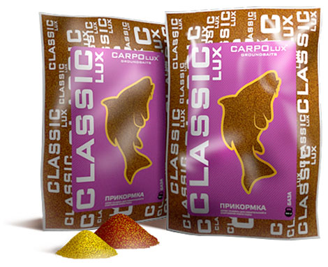
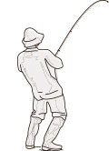

Карп (красный) клубника
арт. ССС-001
арт. ССС-001
 |
Серия: | Классик |
| Тип: | Карп | |
| Аромат: | Клубника | |
 |
Цвет: | |
 |
Масса: | 800 гр. |
Цена: 800
в корзину

Одна из любимых наших прикормок! Имеет в своей основе тесто приготовленное по особой рецептуре и запеченное в нежнейший бисквит. Содержит растительные и животные протеины. Средней фракции, с семью различными самыми вкусными запахами, измельченные семена льна, сои и ряда других растительных компонентов не смогут оставить равнодушным даже самую сытую рыбу. А слегка обжаренные, перемолотые и так любимые карпом семена конопли, не дадут ему отойти от места кормления. Вся палитра ароматики и цвета проявит себя при увлажнении, но хотим напомнить, лучше прикормку недоувлажнить чем переувлажнить.
Видео работы прикормочного шара под водой: смотрим